Mapping the Peacetime Reconstruction Needs of Ukraine
European Parliament · With Dmitri Teperik
UKRAINE · NORDIC–BALTIC SECURITY · RESILIENCE
Senior Analyst at the Sahaidachnyi Security Center and Research Fellow at International Centre for Defence and Security (ICDS).
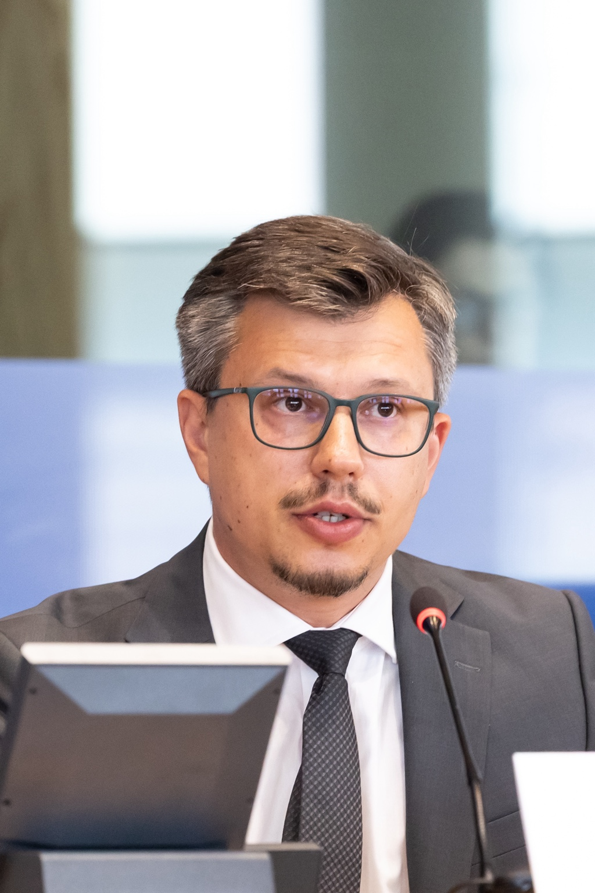
01 / ABOUT
My research focuses on Ukraine’s security and resilience, civil–military cooperation, European integration and recovery. I also examine Ukraine’s defence and security cooperation with the Nordic–Baltic Eight (NB8) and how Ukraine’s experience can inform the region’s security policies.
02 / RESEARCH
Security through the lens of
institutions, communities and people.
How states, institutions and societies withstand crises, adapt to disruption and sustain their capacity to act.
Cooperation between armed forces, public authorities and civilian communities during war, crisis response and recovery.
Security, institutional and societal conditions for rebuilding Ukraine, strengthening governance and supporting long-term modernisation.
Conditions for Ukrainians to return home, reintegrate into their communities and contribute to the country’s recovery.
Reforms, partnerships and security cooperation shaping Ukraine’s path towards membership of the European Union and NATO.
Ukraine’s cooperation with Nordic and Baltic countries, including shared security priorities and lessons from Russia’s war.
03 / PUBLICATIONS
European Parliament · With Dmitri Teperik
Ukraine’s Journey to Recovery, Reform and Post-War Reconstruction · Springer · pp. 63–73
The Journal of Slavic Military Studies · 38(2), 157–178
Democratic Resilience in the Baltics, Vol. 2 · Springer · pp. 181–207
International Centre for Defence and Security · 28 May
International Centre for Defence and Security · 22 May
2026 — PRESENT
Sahaidachnyi Security Center · Ukraine
2025 — PRESENT
International Centre for Defence and Security · Estonia
2016 — PRESENT
Research Centre for Regional Security
Sumy State University · Ukraine
2024 — 2025
Homeland Security Division · GLOBSEC Kyiv Office
EDUCATION
Doctor of Science (DSc), Political Science
Lesya Ukrainka Volyn National University
PhD, Political Science
V. N. Karazin Kharkiv National University
Bachelor’s & Master’s, Engineering Mechanics
Sumy State University
05 / SPEAKING & MEDIA
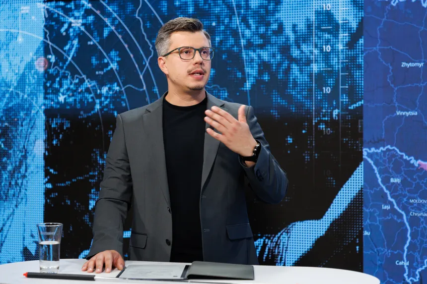
Analysis of Ukraine, resilience and European security for policy audiences and the wider public.
Working languages: English, Ukrainian & Russian
Media & speaking enquiriesSpeaker in the panel “Total Defence Under Fire – What Must Be Ready Before the First Strike?”
Watch the conference livestreamPresentation of the study on Ukraine’s peacetime reconstruction needs.
Watch the committee meetingSpeaker at the Association for the Study of Nationalities convention.
Roundtable on national identity and societal resilience: lessons from Ukraine for the Baltic states.
Presentation of research on Russia’s preparations for its war against Ukraine.
Efficiency and democratic civilian control in the defence sector.
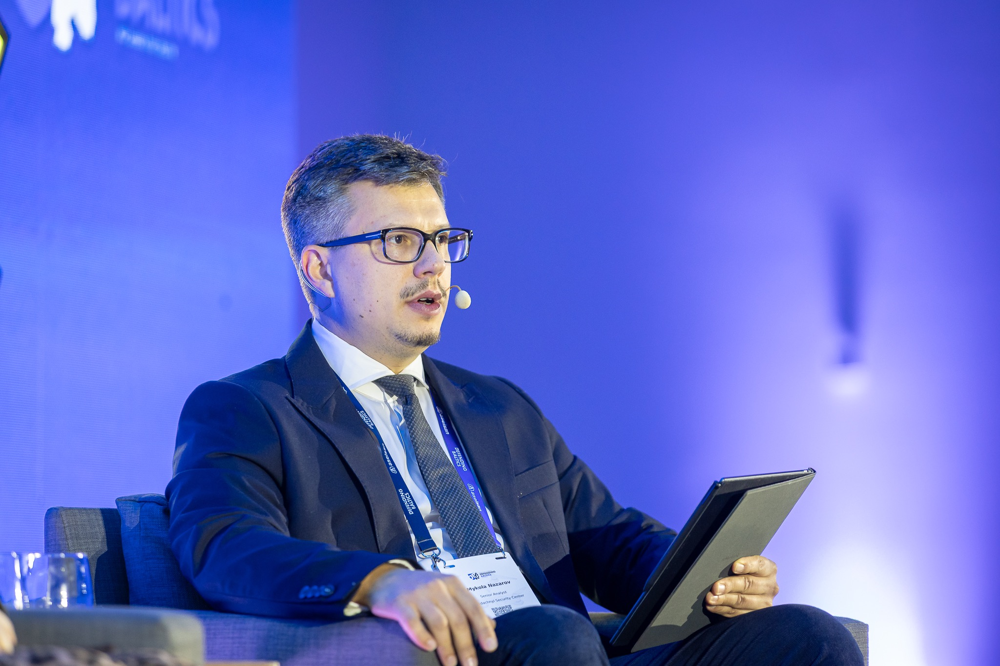
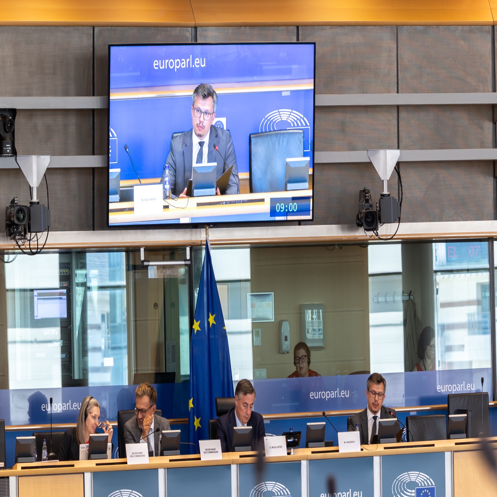
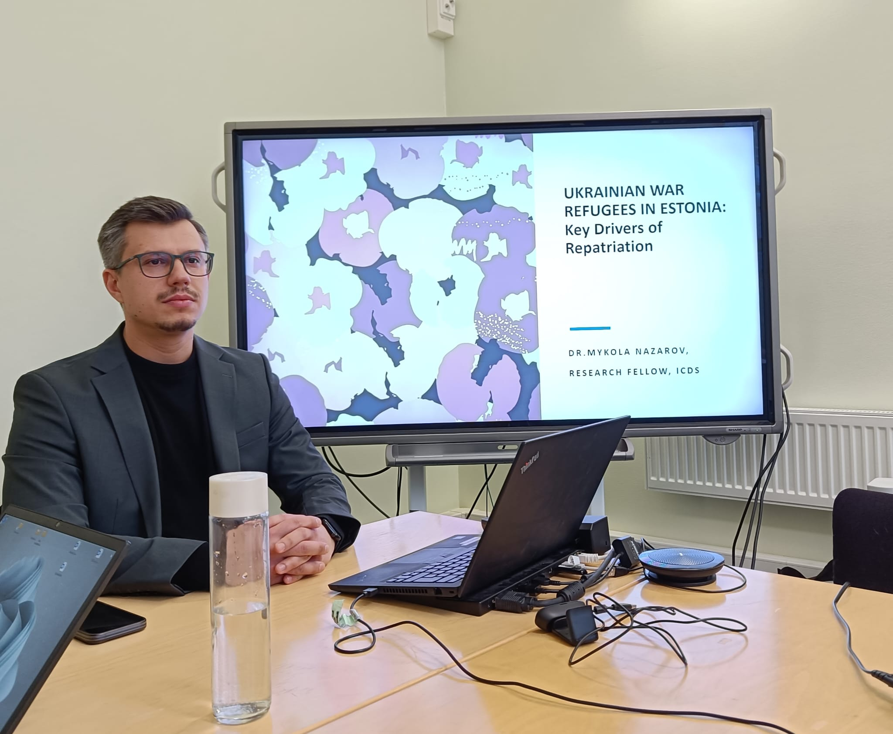
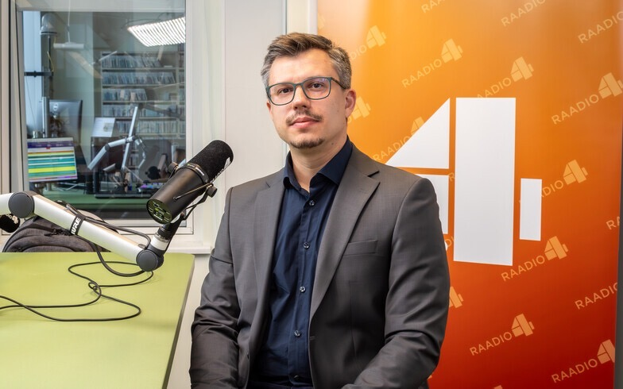
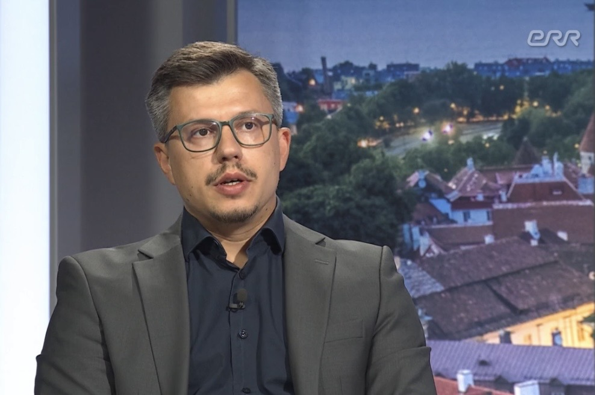
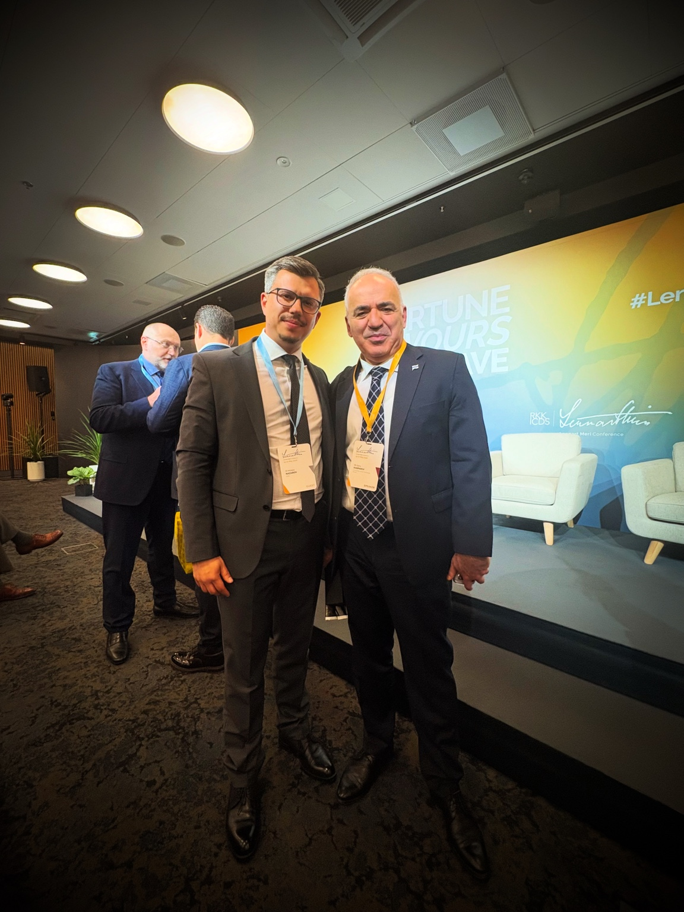
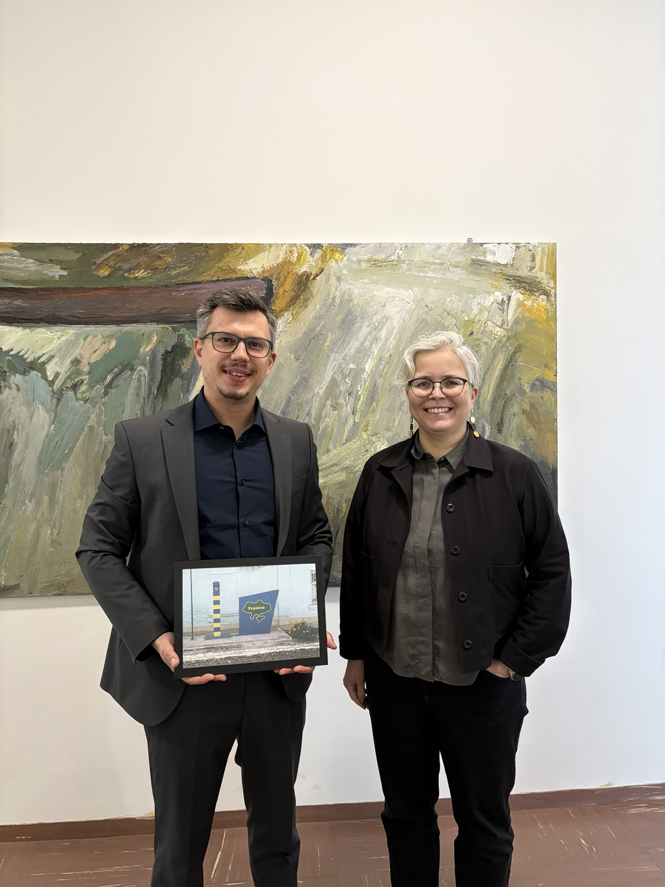
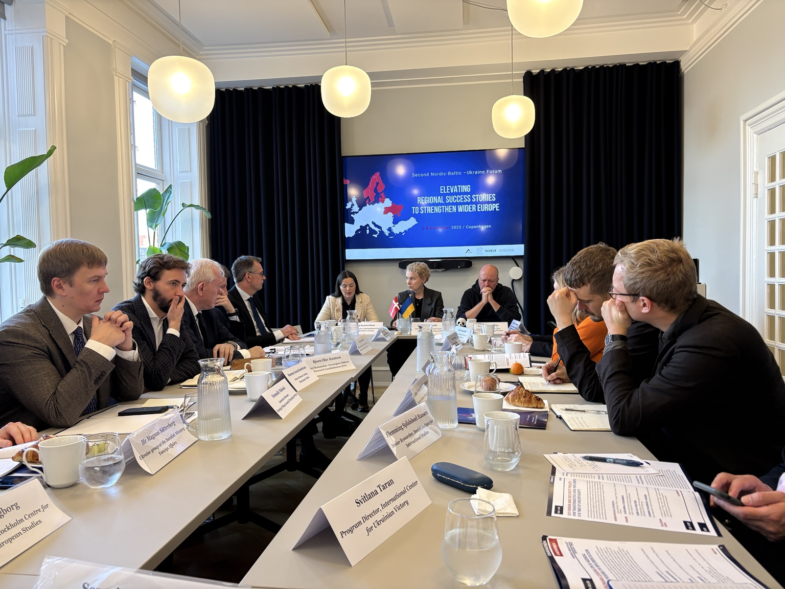
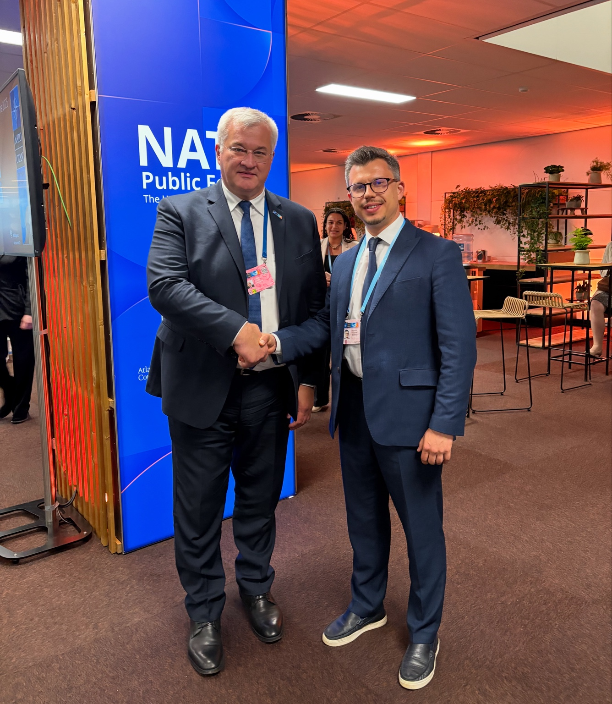
06 / CONTACT
Research cooperation, policy discussions,
speaking invitations and media enquiries.